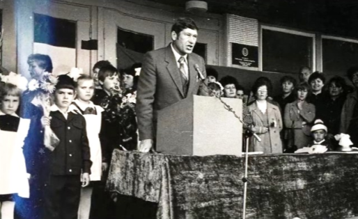

О нашей школе
История школы
Школа - это путь к знаниям и открытиям. Мы сравниваем её с большим кораблем, который уходит в плавание каждый год с первого сентября. За тридцать два года школа совершила очень много таких путешествий.
Меня зовут Екатерина. В этой школе я учусь с первого класса, сейчас я в 10 классе. За всё это время я вспоминаю только самое хорошее и светлое.
Как всё начиналось
24 апреля 1986 года исполком Нижнекамского городского Совета принял решение №230 об открытии школы №21. 1 сентября 1986 года школа на улице Мурадьяна 18А приняла 2242 ученика.

Решение исполкома №230 от 24.04.1986
Первым директором стал Галявеев Нургазиз Нургалеевич, который руководил школой 27 лет.

Галявеев Нургазиз Нургалеевич (1986-2013)
Комсомольская юность школы
В сентябре 1986 года состоялось первое комсомольское собрание. Комсомольцы школы ездили в "Долину смерти", создали клуб интернациональной дружбы имени Саманты Смит (КИД), который стал победителем среди КИДов города и республики.

Вручение Комсомольского Знамени, 1987 г.
Новые страницы истории
В 1998 году школа получила лицензию на коррекционные классы. В 2006 году начали эксперимент "Школа полного дня". В 2010 году школа получила звание "Школа, содействующая здоровью".

Утренняя зарядка в школе
Наши директора
Галявеев Нургазиз Нургалеевич (1986-2013) - основатель школы.
Махмутов Айзат Гамирович (2013-2017) - реализовал программу "Безбарьерная школа".
Махмутов Айзат Гамирович
Сираев Ильнар Рафаилович (2017 - настоящее время) - получил Грант "Эко-школа".
Сираев Ильнар Рафаилович
Наши достижения
За годы работы школа сделала 31 выпуск. Среди выпускников - 32 медалиста.

Первый выпуск школы, 1987 год
Сегодня в школе обучается 536 учащихся, работает 39 педагогов.